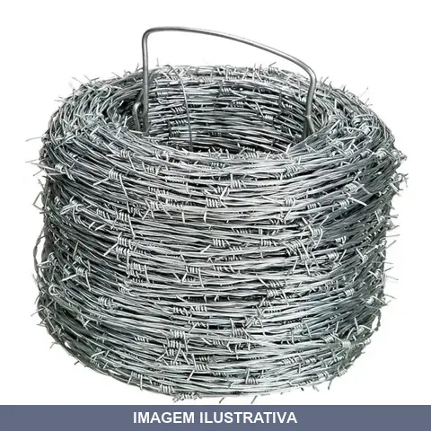
ARAME FARPADO MT BELGO
Arame farpado para cercas de contenção em áreas rurais e urbanas. Rolo com 100 metros de comprimento. Construído em aço zincado com carga de ruptura de 350 kgf, fios de 1,60 mm de diâmetro, distância entre farpas de 125 mm e torção alternada.
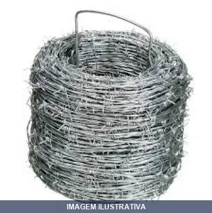
ARAME FARPADO MT MORLAN
Indicação de Uso: Cercas, divisões de propriedades rurais e áreas de confinamento. / Material e Resistência: Arame galvanizado com espinhos distribuídos ao longo do comprimento para maior segurança. / Vantagem Prática: Oferece contenção eficaz de animais com instalação simples e durabilidade em ambientes externos.

ARAME GALVANIZADO = COM PREGUIM
Arame galvanizado fio 16 com 1,65mm de diâmetro, encartelado em rolo com 10 metros. Material: aço carbono revestido com camada de zinco. Proteção contra corrosão obtida através do processo de galvanização. Utilizado para amarração de telas e cercas, fixação e reforço de estruturas.
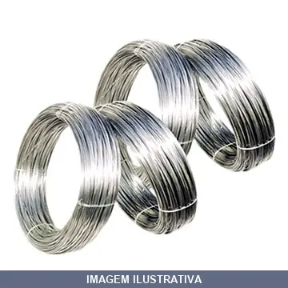
ARAME GALVANIZADO = KG BELGO
ARAME LISO BWG20 GALVANIZADO 0,89MM 1 KG -MAIS OU MENOS 205 MT/P/KG ARRAME GALVANIZADO ROLO= KG 0,89

ARAME GALVANIZADO = KG MORLAN
Indicação de Uso: Construção civil, agropecuária, amarrações, cercamentos e indústrias em geral. Material e Resistência: Arame macio de aço com baixo teor de carbono, galvanizado conforme norma ABNT NBR 6331. Vantagem Prática: Zincagem de camada leve proporciona resistência à corrosão e flexibilidade para facilitar instalação.
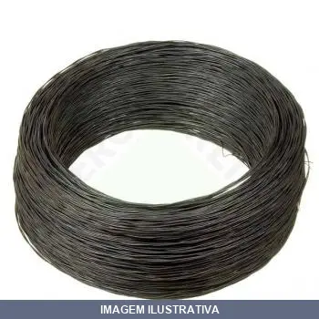
ARAME RECOZIDO = TRIANGULO
Indicação de Uso: Construção civil, amarração de armaduras de concreto armado, confecção de caixarias e fixações. Material e Resistência: Aço recozido, resistência à tração até 40 kgf/mm², conforme norma ABNT NBR 5589. Vantagem Prática: Maleabilidade elevada que facilita o manuseio, torção e amarração com poucas voltas, dispensando ajustes complexos.
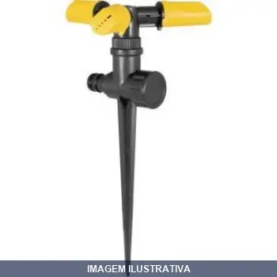
ASPERSOR ESPIGAO VONDER UNICO
IRRIGADOR PLASTICO ESPIGA VONDER Indicado para irrigações em geral Fabricado em plástico ABS de alta resistência, possui 3 jatos ajustáveis e saída auxiliar rosca 3/4" para ligação seriada
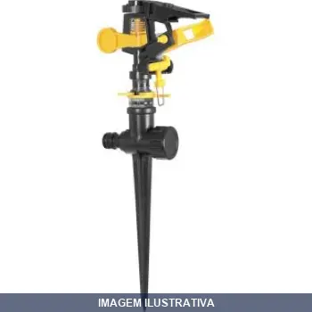
ASPERSOR ESPIGAO VONDER UNICO [021357]
Irrigador setorial tipo espiga REF: 31.98.012.120 Conteúdo da Embalagem: 1 Irrigador com espiga e 1 conector para engate rápido de 1/2" Indicado para irrigações em geral Possui difusor de controle do spray, limitadores para ajuste de ângulo, anel de controle de distância do jato, braço antirrespingo que elimina o respingo lateral e evita o desperdício, dispositivo de reversão de jato, além de saída auxiliar com rosca de 3/4" para ligação seriada
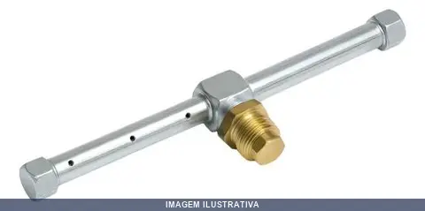
ASPERSOR GRBJ SIMPLES GRB
Aspersor simples para irrigação e limpeza. Indicado para jardins, áreas externas e limpeza geral. Possui mecanismo de pulverização que distribui água em padrão de chuva, ideal para regar plantas e umedecer superfícies.
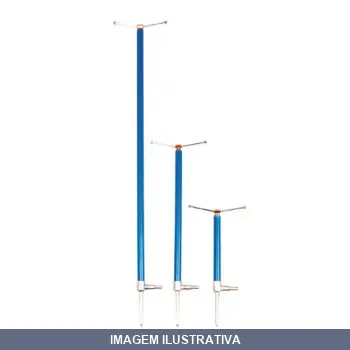
ASPERSOR GRBJ X GRANDE GRB/LIEGE
ASPERSOR GRBJ 100 X 3/4 X 1/2 8 JATOS TUBO 1/2 NF 259508: ASPERSOR IRRIGADOR 100 CM - LIEGE - NF NEGRAO REF: 645443 Vazão: 800 L/h Raio de alcance: 6,5 m Pressão de serviço: 0,7 kg/cm Espaçamento: 8x8 m Precipitação: 16 mm/h Rosca macho: 1/2" Irrigação: viveiros, gramados, jardins e hortaliças Tubo de Subida Ponteira de Fixacão 100 cm 3/4 x 1/2

ASPERSOR GRBJ X MEDIO GRB
ASPERSOR GRBJ 50 X 3/4 X 1/2 8 JATOS TUBO 1/2 Vazão: 800 L/h Raio de alcance: 6,5 m Pressão de serviço: 0,7 kg/cm Espaçamento: 8x8 m Precipitação: 16 mm/h Rosca macho: 1/2" Irrigação: viveiros, gramados, jardins e hortaliças Tubo de Subida Ponteira de Fixacão 50 cm 3/4 x 1/2

ASPERSOR GRBJ X PEQUENO GRB
ASPESOR GRBJ 25 X 3/4 X 1/2 8 JATOS TUBO 1/2 Vazão: 800 L/h Raio de alcance: 6,5 m Pressão de serviço: 0,7 kg/cm Espaçamento: 8x8 m Precipitação: 16 mm/h Rosca macho: 1/2" Irrigação: viveiros, gramados, jardins e hortaliças Tubo de Subida Ponteira de Fixacão 25 cm 3/4 x 1/2
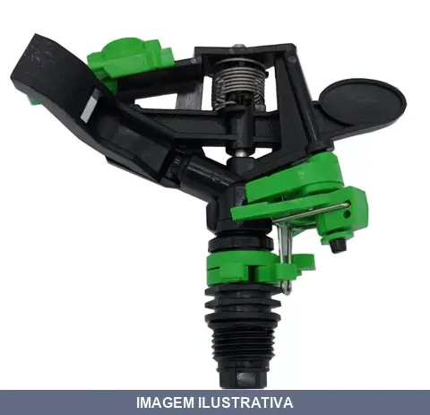
ASPERSOR IMPACTO GIRO SETORIAL SIMPLES VERDE GRB
Indicação de Uso: Irrigação de áreas verdes, jardins e gramados. Material e Resistência: Construção em plástico resistente. Vantagem Prática: Cobertura setorial com giro ajustável, reduzindo consumo de água em áreas específicas.
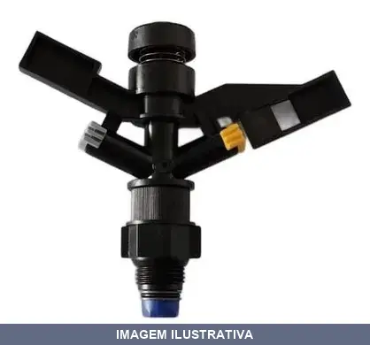
ASPERSOR IMPACTO GIRO SIMPLES AZUL GRB
Aspersor de irrigação com rotação de 360 graus para gramados, viveiros, jardins e canteiros. Conexão rosca macho de 1/2 polegada. Vazão de 650 L/h. Raio de alcance de 5,5 metros com pressão adequada. Construído em alumínio com conexões em metal amarelo e tubo principal em PVC. Indicado para sistemas de irrigação fixos.
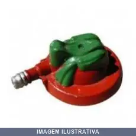
ASPERSOR PERERECA GRB
Indicação de Uso: Irrigação de jardins e gramados. Material e Resistência: Vazão de 450 litros por hora, pressão de serviço 0,5 kg/cm². Vantagem Prática: Modelo fixo com design em forma de perereca, não ajustável, proporciona cobertura uniforme.
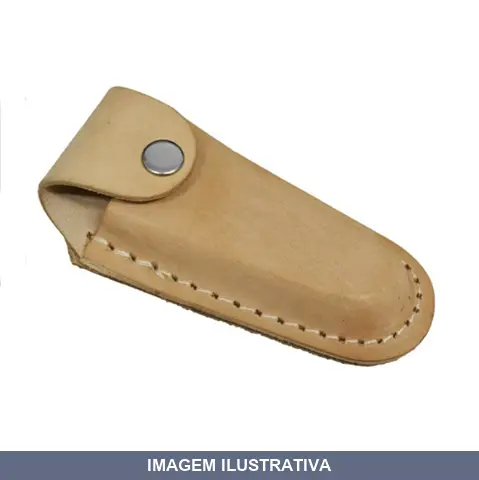
BAINHA CANIVETE COURO LISA BOLFORT
Bainha para canivete em couro, modelo liso com passador para fixar no cinto. Fabricada em couro bovino, oferece proteção e facilita o transporte e manuseio seguro do canivete. Adequada para uso em atividades domésticas, rurais, campestres e profissionais.
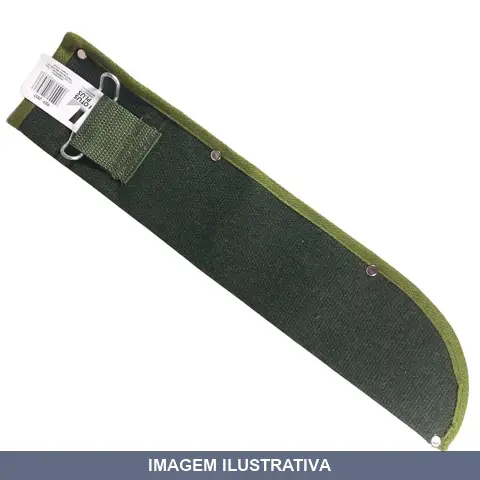
BAINHA FACAO LONA LOTUS
Bainha para facão/machete, confeccionada em lona com suporte para cinto. Ideal para proteção do metal da ferramenta e transporte seguro.

BAINHA FACAO MANTIQUEIRA 10
Bainha para facão de 10 polegadas. Fabricada em couro legítimo com suporte para fixação em cinto. Indicada para proteção e transporte de facões em atividades rurais e trabalhos no campo.
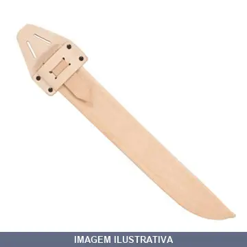
BAINHA FACAO MANTIQUEIRA 14
Indicação de Uso: Para proteção e transporte de facão 14 polegadas. Material e Resistência: Couro reforçado, colado e costurado sem possibilidade de danos pelo corte.
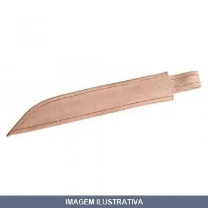
BAINHA FACAO MANTIQUEIRA 16
Bainha para facão de 16 polegadas. Produto destinado ao armazenamento e transporte seguro de facão, protegendo a lâmina e o usuário. Material resistente adequado para uso em atividades rurais, agrícolas e de trabalho em campo.
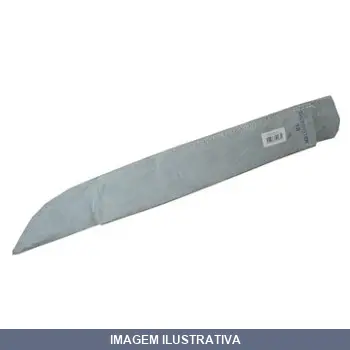
BAINHA FACAO MANTIQUEIRA 18
Bainha para facão de 18 polegadas (51 cm), confeccionada em couro legítimo com costura nas extremidades e rebites. Material em couro tanino que oferece proteção contra lesões e conservação do corte da ferramenta. Dimensões: 6 cm de largura x 15 mm de espessura. Artesanato com acabamento resistente para transporte e proteção da ferramenta.

BEBEDOR SUINO CHUPETA ADULTO ZATTI
Indicação de Uso: Bebedouro para suínos adultos em estábulos e chiqueiros, atendendo demanda de água com mínimo desperdício. Material e Resistência: Fabricado em latão com alta durabilidade e resistência à ferrugem. Vantagem Prática: Acoplável a suportes metálicos com ou sem regulagem de altura, facilitando instalação e ajustes do sistema.

BEBEDOR SUINO CHUPETA GRANDE GRB
Indicação de Uso: Bebedor para suínos, modelo chupeta de grande porte, utilizado em criações e propriedades rurais para fornecimento de água aos animais. Material e Resistência: Estrutura resistente adequada para uso em ambientes rurais. Vantagem Prática: Facilita o acesso à água de forma prática e reduz desperdício durante o consumo pelos animais.
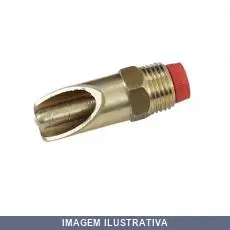
BEBEDOR SUINO CHUPETA PEQUENO GRB
Indicação de Uso: Bebedor tipo chupeta destinado à criação de suínos, proporciona hidratação automática aos animais. Material e Resistência: Construído em material resistente e durável para uso em ambientes de produção animal. Vantagem Prática: Sistema de chupeta facilita o acesso à água, reduzindo desperdício e mantendo a higiene do bebedouro.
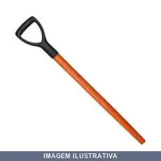
CABO MADEIRA PARA PA Y PLASTICO 90025PANDOFO
Cabo de madeira para pá com terminal tipo Y plástico. Indicação de Uso: Escavação, remoção e movimentação de materiais como terra, areia, cimento, pedras e entulho. Material e Resistência: Madeira de alta resistência a impactos. Vantagem Prática: Dispensa o uso de cunha.
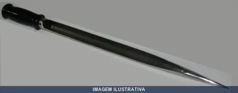
CALADOR DE INOX PARA SOJA HUMITEC
CALADOR SACARIA AÇO 30CM 3/4'' COM CABO EM NYLON Sua função é coletar amostras para análise de grãos já ensacados, confeccionado em tubo de inox 304. Características Medidas de lâmina 30, 40,50cm. Diâmetros de tubo 3/4”, 7/8”,1",1.1/4", Cabo em poypropineno na cor preta medindo 10cm;
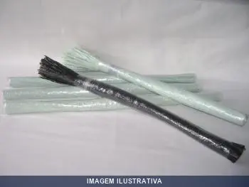
CHICOTE RECICLADO MTS NOVA PLAST
Chicote reciclado em fitilho, cor neutra, indicado para tutoramento de plantas, sustentação de galhos, amarrações em geral e acabamentos em trabalhos diversos. Confeccionado a partir de material reciclado, oferece resistência adequada para aplicações leves a médias.
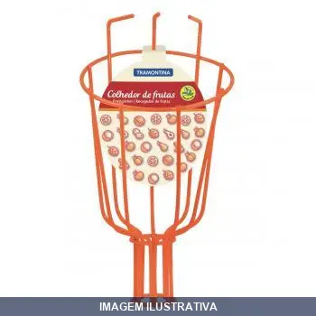
COLHEDOR FRUTAS TRAMONTINA
Indicação de Uso: Colheita de frutas em árvores e plantas. Material e Resistência: Estrutura adequada para uso em jardins e pomares. Vantagem Prática: Facilita o acesso a frutas em altura, reduzindo esforço físico durante a colheita.
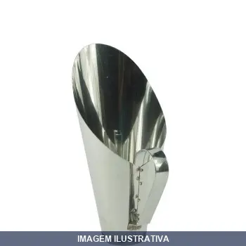
CONCHA PARA CEREAIS GALVANIZADA ZATTI
Indicação de Uso: Concha para armazenamento e distribuição de cereais e grãos em geral. Material e Resistência: Construída em aço galvanizado, proporcionando resistência à corrosão. Vantagem Prática: Facilita o manejo e o acondicionamento de cereais em propriedades rurais, cozinhas industriais e estabelecimentos de armazenagem.
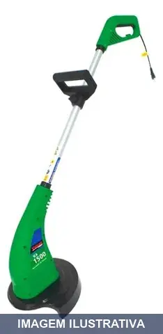
CORTADOR GRAMA F. 1500WATTS VULCAN
Cortador de grama elétrico para uso doméstico e em pequenas áreas. Alimentação 127V com potência de 1500W. Ideal para manutenção de gramados e limpeza de espaços verdes residenciais.
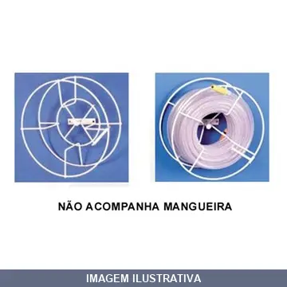
ENROLADOR DE MANGUEIRA OVERTINE
Enrolador de mangueira manual em ferro pintado. Capacidade para armazenar até 30 metros de mangueira. Sistema de enrolamento manual que permite desenrolar apenas a quantidade necessária, mantendo o restante organizado e protegido. Ideal para jardins, limpeza e uso residencial. Requer apenas colocação do engate na presilha e giro do enrolador. Mangueira não acompanhada.
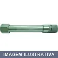
ESGUICHO LONGO RF
RF32 ESGUICHO ALUMINIO COMPRIMENTO 170MM ROSCA 1/2''
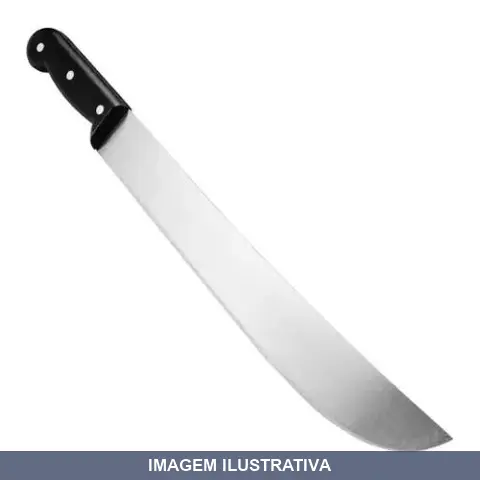
FACAO CABO PLASTICO BRASFORT
Indicação de Uso: Corte de vegetação, mato e galhos em atividades agrícolas, rurais, jardinagem e limpeza de terrenos. Material e Resistência: Lâmina em aço carbono temperado, resistente a impactos e desgastes. Cabo em polipropileno moldado ergonomicamente, resistente a umidade e variações de temperatura. Vantagem Prática: Mantém afiação por mais tempo, não requer manutenções frequentes. Cabo confortável reduz fadiga no uso prolongado, fácil de limpar e não prolifera fungos ou bactérias.
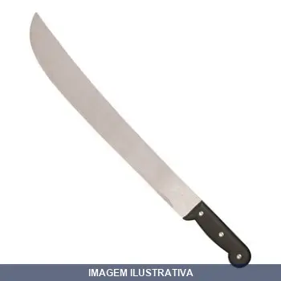
FACAO CABO POLIP TRAMONTINA
FACAO TRAMONTINA 10'' CABO POLIPROPILENO REF: 26600
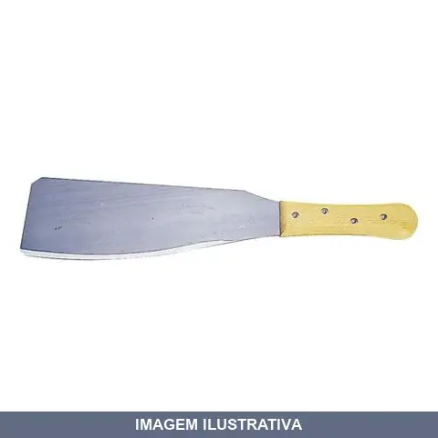
FACAO PARA CANA COLLINS
Indicação de Uso: Ferramenta manual indicada para corte de cana-de-açúcar e capinação em trabalhos agrícolas e rurais. Material e Resistência: Lâmina em aço, resistente ao uso repetido em corte de fibras vegetais. Vantagem Prática: Comprimento adequado para alcance e corte eficiente em plantações.

FACAO PARA CANA GRAFF
Indicação de Uso: Ferramenta manual destinada ao corte de cana-de-açúcar e vegetação densa. Material e Resistência: Lâmina de aço com cabo ergonômico. Vantagem Prática: Ideal para trabalhos em plantações, limpeza de terrenos e manejo agrícola.
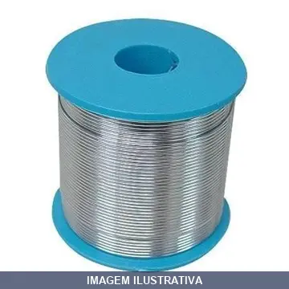
FIO AÇO INOX PARA SERRA ELETRICA COM +- SUPERFINE
CABO E. FIO DE AÇO INOX 0,45MM BOBINA COM MAIS OU MENOS 350 METROS
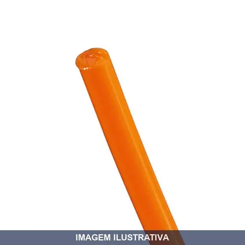
FIO CORTAR E .4MMX50MT REDONDO KALA
Fio de corte redondo para roçadeiras e aparadores de grama. Fabricado em material resistente, adequado para corte de vegetação em jardins e áreas externas. Prático para reposição e manutenção de equipamentos de limpeza de terrenos.
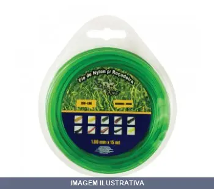
FIO CORTAR E .8MMX15MT REDONDO VERDE SPIN
FIO DE NYLON 1,80 MM REDONDO BLISTER COM 15 METROS VERDE ECO LINE FIO DE NYLON PARA ROÇADEIRA
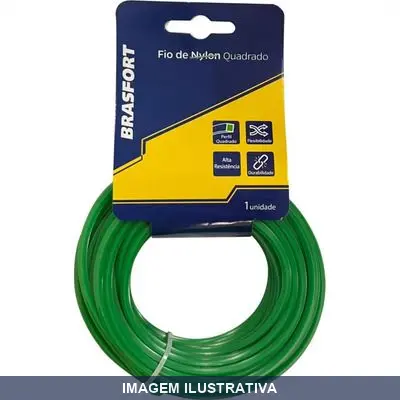
FIO CORTAR E BRASFORT 1.8MM 7538
Fio de corte para roçadeiras e aparadores. Indicado para limpeza de terrenos, jardins e áreas gramadas. Material resistente adequado para trabalhos de corte em vegetação. Prático para reposição em equipamentos portáteis de corte.
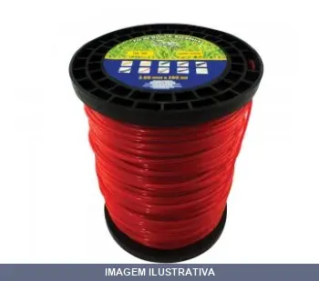
FIO CORTAR E BRASFORT 3.0MM 7542
Indicação de Uso: Fio de nylon para roçadeiras e aparadores, usado no corte de grama e vegetação. Material e Resistência: Fio de corte resistente, adequado para trabalhos que demandam precisão e durabilidade. Vantagem Prática: Facilita operações de corte limpo e controlado em diversas superfícies.

FIO CORTAR E QUADRADO COM 15MT SPIN
Fio de nylon de perfil quadrado para roçadeira. Proporciona corte eficaz em vegetação densa com maior rigidez e área de contato. Resistente a impactos e abrasões, ideal para trabalhos intensos em grandes áreas, ervas daninhas e matos resistentes. Produz acabamentos precisos.
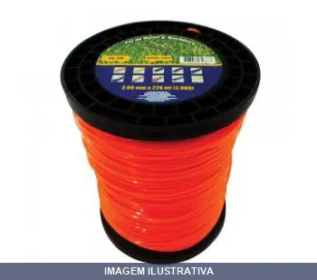
FIO CORTAR E QUADRADO SPIN
Indicação de Uso: Fio de nylon para roçadeira e cortador de grama, indicado para cortes de vegetação densa e trabalhos intensos em grandes áreas. Material e Resistência: Fabricado em nylon de alta resistência com perfil quadrado, oferecendo durabilidade e resistência a impactos. Vantagem Prática: Arestas definidas proporcionam maior poder de corte e precisão em trabalhos de roçagem.
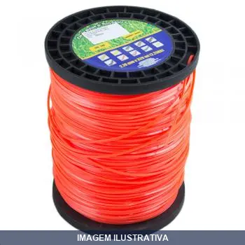
FIO CORTAR E QUADRADO WORK/KALA
FIO NYLON QUADRADO 3.MM 339M (ROLO) WORKER/ KALA 3KG NF 250296 NEGRAO: FIO CORTADOR GRAMA QUADRADO 3;0MM 226METROS 2KG - KALA COD: 394424

FIO CORTAR E REDONDO COM 15MT SPIN
Fio de nylon redondo para roçadeiras e aparadores de grama. Fabricado em nylon de alta resistência, proporcionando flexibilidade e durabilidade. Indicado para uso em roçadeiras compatíveis com Spin.

FIO CORTAR E REDONDO LARANJA SPIN
Indicação de Uso: Corte e limpeza de grama, mato e vegetação em roçadeiras e cortadores. / Material e Resistência: Fio de nylon redondo, resistente a impactos e abrasão. / Apresentação: Rolo com metragem e peso especificados, cor laranja.

FIO CORTAR E REDONDO SPIN
Indicação de Uso: Corte de grama, plantas e vegetação em geral. / Material e Resistência: Fio de nylon redondo com alta resistência ao desgaste. / Vantagem Prática: Formato redondo proporciona melhor desempenho de corte e maior durabilidade em uso contínuo.
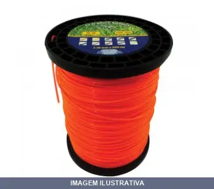
FIO CORTAR E REDONDO SPIN LINE SPIN
Fio de corte de nylon para roçadeiras e cortadores de grama. Material resistente em formato redondo, adequado para aparadores de borda. Bobina pronta para uso, oferecendo praticidade na troca e reposição do fio.

FIO PARA ROCADEIRA NYLON .0MMX AJAX
Indicação de Uso: Fio para roçadeiras e aparadores de grama. Material e Resistência: Fabricado em nylon de alta resistência com flexibilidade e durabilidade. Resistente ao nó e à abrasão. Vantagem Prática: Formato redondo, cores variadas, garantindo corte eficiente e preciso em trabalhos de jardinagem com bom rendimento.
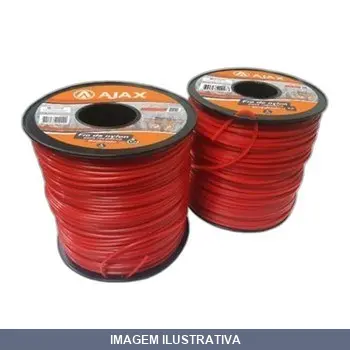
FIO PARA ROCADEIRA NYLON .4MMX AJAX
Indicação de Uso: Fio de corte para rocadeira, indicado para roçagem e limpeza de áreas externas. Material e Resistência: Fabricado em nylon, material resistente adequado para trabalho contínuo. Vantagem Prática: Oferece facilidade de reposição e manutenção do equipamento de roçagem.

FIO PARA ROCADEIRA NYLON .6MMX AJAX
Indicação de Uso: Fio para rocadeira, ideal para corte de grama e limpeza de áreas externas. Material e Resistência: Nylon, material resistente ao atrito e durável para uso contínuo. Vantagem Prática: Oferece comprimento suficiente para reposição em rocadeiras convencionais.

FOICINHA PARA PASTO GRAFF
Indicação de Uso: Ferramenta manual indicada para corte e limpeza de pastos, capins e vegetação baixa em áreas rurais e propriedades agrícolas. Material e Resistência: Construída com lâmina resistente, apropriada para trabalhos contínuos em campo. Vantagem Prática: Ferramenta leve e de fácil manuseio para roçagem e manutenção de pastagens.
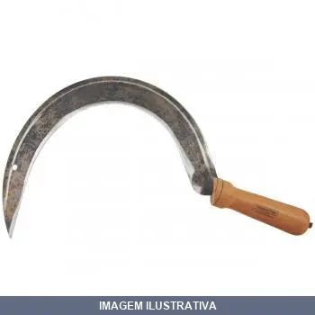
FOICINHA PARA PASTO TRAMONTINA 77682/015 [022560]
Indicação de Uso: Foicinha destinada ao corte e limpeza de pastos e áreas com vegetação rasteira. Material e Resistência: Construída em aço, apropriada para trabalhos em campo. Vantagem Prática: Ferramenta de mão compacta e prática para capina e roçada em pequenas áreas.
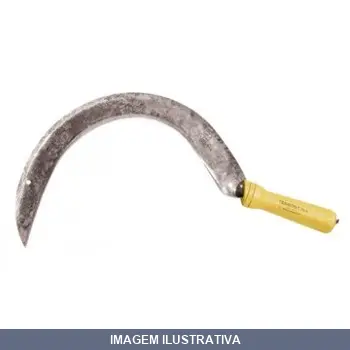
FOICINHA PARA PASTO TRAMONTINA 77682/025 [022312]
Indicação de Uso: Ferramenta indicada para corte e limpeza de pastos, vegetação e plantas em áreas externas. Material e Resistência: Construída em aço, apropriada para trabalhos contínuos no campo. Vantagem Prática: Lâmina afiada para corte eficiente de gramados e plantas invasoras.
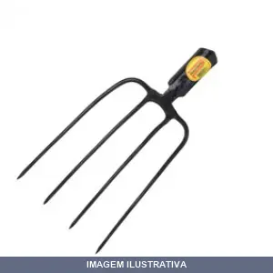
FORCADO CURVO D COM CABO 47650 MAX
Indicação de Uso: Para amontoar pasto, revirar solo e misturar adubo, podendo também ser utilizado em agricultura, horticultura e jardinagem. Material e Resistência: Fabricado em aço carbono especial de qualidade, temperado em todo o corpo da peça para maior resistência e menor desgaste. Recebe pintura eletrostática a pó para proteção contra oxidação. Vantagem Prática: Lâmina temperada e cabo de madeira de origem renovável proporcionam durabilidade e apresentação.
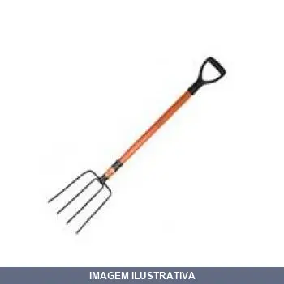
FORCADO RETO D COM CABO RETO 47550 MAX
Forcado com 4 dentes retos e cabo em madeira. Fabricado em aço carbono especial, temperado em todo corpo para maior resistência e menor desgaste. Revestido com pintura eletrostática a pó, oferecendo proteção contra oxidação. Indicado para movimentar e manipular feno, palha, alfafa, adubo e resíduos em trabalhos de agricultura e jardinagem, bem como para revirar e misturar materiais.

FORCADO RETO D COM CABO RETO 99822
Forcado reto com cabo reto, indicado para trabalhos de jardinagem, limpeza de áreas e movimentação de materiais soltos. Material em aço com cabo reto para controle e estabilidade durante o uso.
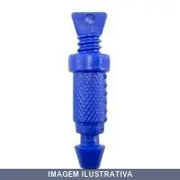
GOTEJADOR AJUSTAVEL COM GRB
Indicação de Uso: Sistema de irrigação por gotejamento para plantas e jardins. Material e Resistência: Construção em plástico resistente. Vantagem Prática: Fluxo de água ajustável conforme necessidade, permitindo controle personalizado da irrigação. Conjunto com 10 peças para cobertura de múltiplos pontos.
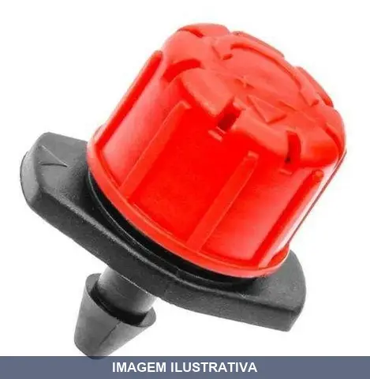
GOTEJADOR AJUSTAVEL R- COM10 GRB
Indicação de Uso: Irrigação e rega localizada de plantas e jardins. Material e Resistência: Construído em material resistente para uso em sistemas de irrigação. Vantagem Prática: Design ajustável permite controlar o fluxo de água conforme necessidade da plantação.
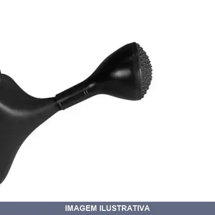
GRIVO PARA REGADOR LITRO PRETO CIPLA
Indicação de Uso: Crivo para regador, utilizado para distribuir a água em jato suave ao regar plantas em jardins, canteiros e vasos. Material e Resistência: Construído em plástico preto. Vantagem Prática: O crivo giratório permite direcionar o fluxo de água com facilidade durante o uso.
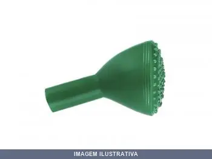
GRIVO PARA REGADOR LITRO VERDE CIPLA
Crivo para regador, peça de reposição para rega de plantas e flores. Fabricado em polietileno de alta densidade, resistente e ergonômico. O crivo proporciona distribuição uniforme da água. Ideal para jardinagem e manutenção de plantas em geral.
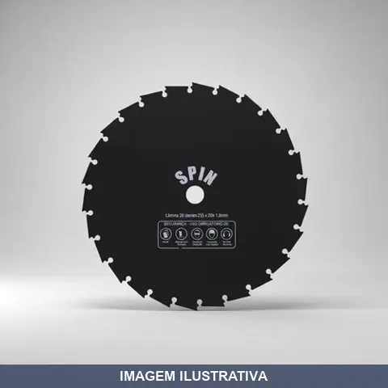
LAMINA ROCADEIRA DENTES FURO SPIN 26 20MM 255X1.8MM
Indicação de Uso: Lâmina para roçadeiras, ideal para corte de vegetação, matos, arbustos e pequenos galhos em casas de campo, sítios, chácaras, fazendas e áreas de reflorestamento. Material e Resistência: Fabricada em aço cromo vanádio com dentes de vídea soldados, oferece durabilidade, resistência ao desgaste e precisão de corte. Vantagem Prática: Compatível com diversas marcas e modelos de roçadeiras, permite montagem simples e rápida.

LAMINA ROCADEIRA DENTES FURO SPIN 26 25,4MM 255X1.8MM
Indicação de Uso: Lâmina para roçadeiras, ideal para corte de vegetação, matos, arbustos e pequenos galhos em casas de campo, sítios, chácaras, fazendas e áreas de reflorestamento. Material e Resistência: Fabricada em aço cromo vanádio com dentes de vídea soldados, oferece durabilidade, resistência ao desgaste e precisão de corte. Vantagem Prática: Compatível com diversas marcas e modelos de roçadeiras, permite montagem simples e rápida.
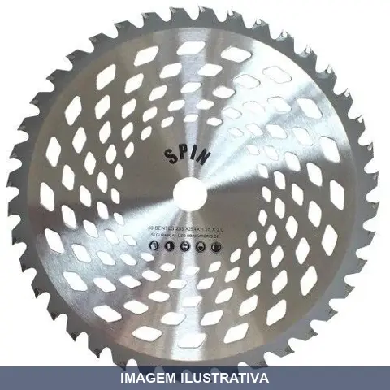
LAMINA ROCADEIRA DENTES FURO SPIN 40 1POL 255X1.25MM
Indicação de Uso: Lâmina para roçadeiras, ideal para corte de vegetação, matos, arbustos e pequenos galhos em casas de campo, sítios, chácaras, fazendas e áreas de reflorestamento. Material e Resistência: Fabricada em aço cromo vanádio com dentes de vídea soldados, oferece durabilidade, resistência ao desgaste e precisão de corte. Vantagem Prática: Compatível com diversas marcas e modelos de roçadeiras, permite montagem simples e rápida.

LAMINA ROCADEIRA DENTES FURO SPIN 40 20MM 255X1.25MM
Indicação de Uso: Lâmina para roçadeiras, ideal para corte de vegetação, matos, arbustos e pequenos galhos em casas de campo, sítios, chácaras, fazendas e áreas de reflorestamento. Material e Resistência: Fabricada em aço cromo vanádio com dentes de vídea soldados, oferece durabilidade, resistência ao desgaste e precisão de corte. Vantagem Prática: Compatível com diversas marcas e modelos de roçadeiras, permite montagem simples e rápida.
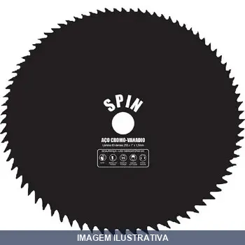
LAMINA ROCADEIRA DENTES FURO SPIN 80 1POL 255X1.5MM
Indicação de Uso: Lâmina para roçadeiras, ideal para corte de vegetação, matos, arbustos e pequenos galhos em casas de campo, sítios, chácaras, fazendas e áreas de reflorestamento. Material e Resistência: Fabricada em aço cromo vanádio com dentes de vídea soldados, oferece durabilidade, resistência ao desgaste e precisão de corte. Vantagem Prática: Compatível com diversas marcas e modelos de roçadeiras, permite montagem simples e rápida.
LAMINA ROCADEIRA PONTAS FURO 02 1POL 260X2.7MM
Indicação de Uso: Lâmina para roçadeiras com 2 pontas de corte. Material e Resistência: Fabricada em aço cromo vanádio, oferece durabilidade e resistência em operação. Vantagem Prática: Proporcionam fio afiado e estabilidade durante o corte, compatível com roçadeiras que possuem furação central.

LAMINA ROCADEIRA PONTAS FURO 02 1POL 330X2.7MM
Indicação de Uso: Lâmina para roçadeiras com 2 pontas de corte. Material e Resistência: Fabricada em aço cromo vanádio, oferece durabilidade e resistência em operação. Vantagem Prática: Proporcionam fio afiado e estabilidade durante o corte, compatível com roçadeiras que possuem furação central.

LAMINA ROCADEIRA PONTAS FURO 02 1POL 350X2.7MM
Indicação de Uso: Lâmina para roçadeiras com 2 pontas de corte. Material e Resistência: Fabricada em aço cromo vanádio, oferece durabilidade e resistência em operação. Vantagem Prática: Proporcionam fio afiado e estabilidade durante o corte, compatível com roçadeiras que possuem furação central.

LAMINA ROCADEIRA PONTAS FURO 02 20MM 260X2.7MM
Indicação de Uso: Lâmina para roçadeiras com 2 pontas de corte. Material e Resistência: Fabricada em aço cromo vanádio, oferece durabilidade e resistência em operação. Vantagem Prática: Proporcionam fio afiado e estabilidade durante o corte, compatível com roçadeiras que possuem furação central.
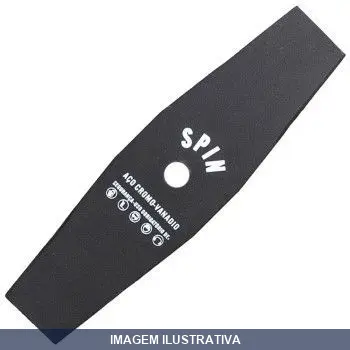
LAMINA ROCADEIRA PONTAS FURO 02 20MM 330X2.0MM
Indicação de Uso: Lâmina para roçadeiras com 2 pontas de corte. Material e Resistência: Fabricada em aço cromo vanádio, oferece durabilidade e resistência em operação. Vantagem Prática: Proporcionam fio afiado e estabilidade durante o corte, compatível com roçadeiras que possuem furação central.

LAMINA ROCADEIRA PONTAS FURO 02 20MM 330X2.7MM
Indicação de Uso: Lâmina para roçadeiras com 2 pontas de corte. Material e Resistência: Fabricada em aço cromo vanádio, oferece durabilidade e resistência em operação. Vantagem Prática: Proporcionam fio afiado e estabilidade durante o corte, compatível com roçadeiras que possuem furação central.

LAMINA ROCADEIRA PONTAS FURO 02 25,4MM 305MM
Lâmina rocadeira com duas pontas cortantes, projetada para roçadeiras e aparadores de grama. Furo central para fixação em eixos de máquinas. Indicada para corte de vegetação e grama em áreas externas. Material resistente adequado para trabalhos de roçagem e limpeza de terrenos.
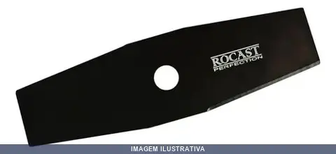
LAMINA ROCADEIRA PONTAS FURO 02 25,4MM 355MM
Lâmina para rocadeira com dois pontas de corte. Indicada para aparar e roçar vegetação em geral. Possui furo de fixação para encaixe em roçadeiras. Material resistente adequado para trabalhos em jardins, terrenos e áreas externas.
LAMINA ROCADEIRA PONTAS FURO 02 25MM 330X2.0MM
Indicação de Uso: Lâmina para roçadeiras com 2 pontas de corte. Material e Resistência: Fabricada em aço cromo vanádio, oferece durabilidade e resistência em operação. Vantagem Prática: Proporcionam fio afiado e estabilidade durante o corte, compatível com roçadeiras que possuem furação central.
LAMINA ROCADEIRA PONTAS FURO 02 3/4 7348
Lâmina para roçadeira com duas pontas e furo de encaixe. Indicada para corte de vegetação baixa e média em áreas de difícil acesso. Utilizada em casas, sítios, chácaras e pequenas propriedades rurais. Oferece boa durabilidade e eficiência no corte.
LAMINA ROCADEIRA PONTAS FURO 03 20MM 255X2.9MM
Indicação de Uso: Lâmina para roçadeiras com 3 pontas de corte e furação central. Material e Resistência: Fabricada em aço cromo vanádio, oferece durabilidade e resistência em operação. Vantagem Prática: Proporcionam fio afiado e estabilidade durante o corte, compatível com roçadeiras que possuem furação central de 20mm.
LAMINA ROCADEIRA PONTAS MC TRAPP
Lâmina para rocadeira com dois pontos de corte. Indicada para aparas e acabamento de bordas em trabalhos de roçagem. Lâmina de aço com dois gumes de corte para rendimento na tarefa. Vantagem prática: dois pontos de corte ampliam a área de trabalho por ciclo.
LINHA PED FIO BRASFORT 050M 01 7460 [016944]
Fio para alinhamento (fio de pedreiro), composição 100% polipropileno, com 50 metros. Utilizado para marcação e alinhamento em obras e construções, não é condutor elétrico. Produto não reciclável, indicado para uso profissional em canteiros de obra e serviços de pedreiro.
LINHA PED FIO BRASFORT 100M 01 7461 [016945]
Indicação de Uso: Fio para alinhamento usado por pedreiros em obras de construção civil. Material e Resistência: 100% polietileno. Vantagem Prática: Disponível em bobina de 100m, facilitando o corte conforme necessário sem desperdício.

LINHA PED FIO UNIFIO
Indicação de Uso: Fio monofilamento de polipropileno para alinhamento de obras (fio de pedreiro), não condutor elétrico. Material e Resistência: Composição 100% polipropileno, contém 50 metros. Vantagem Prática: Facilita a passagem por canaletas e dutos devido ao formato único e contínuo.
LINHA PESCA , M MAZZAFERRO 0 80X100
Linha monofilamento Mazzaferro em nylon, resistente a abrasões e raios UV. Material sintético com elasticidade que absorve impactos, reduzindo risco de arrebentamento. Oferece sensibilidade para detectar fisgadas leves. Aplicável em pesca em água doce e salgada. Desenrola suavemente sem embaraços.
LINHA PESCA , M MAZZAFERRO 1 00X100
Indicação de Uso: Ideal para atividades de pesca em água doce e salgada. Material e Resistência: Confeccionado em material resistente adequado para suportar tensão durante o lançamento e captura. Vantagem Prática: Apresentação em rolo facilita armazenamento e manuseio para pescadores.
LONA ABAFADORA PLASTCOR
Indicação de Uso: Lona abafadora para proteção, isolamento e contenção em obras, reformas e serviços gerais. Material e Resistência: Confeccionada em tecido, oferece resistência ao uso prolongado. Vantagem Prática: Fácil de transportar e aplicar, protege superfícies e ambientes contra poeira, respingos e detritos.
LONA PRETA
Lona preta para proteção, cobertura e vedação de carga em transportes, obras e armazenamento. Material resistente indicado para uso externo e em ambientes com exposição a intempéries. Proporciona cobertura prática e durável para diversos fins.

LONA PRETA M LONAPACK
Indicação de Uso: Construção civil, reformas, pinturas, cobertura de materiais e produtos em pátios, impermeabilização de solo, forração de caminhões e transporte em geral. Material e Resistência: Lona plástica de polietileno de baixa densidade (PEBD) reciclado, com superfície lisa. Flexível, leve e resistente. Vantagem Prática: Fácil de manusear, dobrar, instalar e transportar. Acabamento fosco garante proteção contra luz e poeira. Aplicações temporárias ou de média duração.
LONA PRETA/BRANCA X150 VELPER
Indicação de Uso: Cobertura, proteção e impermeabilização de cargas, estruturas e áreas externas. Material e Resistência: Lona reversível com faces preta e branca, resistente a intempéries e raios UV. Vantagem Prática: Dupla face permite escolher o lado conforme necessidade de absorção ou reflexão térmica.
LONA X100 MICRAS AZUL AXION
ENCERADO 2 X 2 METROS AZUL DE 70G E 100 MICRAS DAISA REF: 029040 LONA/ENCERADO DE POLIETILENO AZUL 2X2M 100 MICROS

LONA X200 MICRAS AZUL AXION
Lona azul em polietileno com 200 micras de espessura. Indicada para proteção de cargas, coberturas temporárias, impermeabilização e usos gerais em obras, armazenagem e transporte. Material resistente à água e aos raios UV, adequado para ambientes internos e externos.
MANTA BIDIM GT07 . M GEOTEXTIL
Manta geotextil não tecida indicada para drenagem, separação de camadas, filtração e reforço em obras civis e paisagismo. Confeccionada em fibras sintéticas, oferece permeabilidade e estabilidade estrutural. Facilita a execução de projetos que requerem controle de fluxo de água e distribuição de cargas.
PA
Indicação de Uso: Pá para trabalhos de escavação, carregamento e movimentação de materiais em geral. Material e Resistência: Fabricada com material antifaisca, apropriada para ambientes com risco de centelhas ou inflamabilidade. Vantagem Prática: Segura para uso em locais com gases, vapores inflamáveis ou presença de materiais combustíveis.
PA AJUNTADEIRA DE BICO COM CABO Y N4 95511/98510
Ajuntadeira de bico com cabo Y. Disponível em duas versões: modelo tradicional com cabo em madeira e modelo com terminação em PVC. Indicação de Uso: trabalhos de escavação, jardinagem e remoção de terra. Vantagem Prática: Cabo Y oferece melhor distribuição de força e controle durante o uso.
PA AJUNTADEIRA DE BICO LEVE SEM CABO TRAMONTINA
Indicação de Uso: Acabamento em obras de construção civil, nivelação e alisamento de superfícies em argamassa e concreto. Ferramenta essencial para agricultura, jardinagem e atividades de construção. Material e Resistência: Aço carbono especial, cortada a laser e temperada em todo o corpo. Pintura eletrostática a pó previne oxidação. Vantagem Prática: Sem cabo, facilita manobras em espaços reduzidos. Design leve reduz esforço físico do usuário.

PA AJUNTADEIRA DE BICO PESADA SEM CABO TRAMONTINA
Indicação de Uso: Ferramenta essencial para juntar e carregar materiais na construção civil, jardinagem e agricultura. Ideal para nivelar e alisar superfícies em argamassa e concreto. Material e Resistência: Fabricada em aço carbono especial, cortada a laser e temperada em todo o corpo. Recebe pintura eletrostática a pó para proteção contra oxidação. Oferece alta resistência e menor desgaste durante o uso. Vantagem Prática: Design sem cabo facilita manuseio em espaços reduzidos.
PA AJUNTADEIRA DE BICO SEM CABO N2 FRANKFURT
Pá ajuntadeira de bico sem cabo, utilizada para varrer, recolher e transportar resíduos, detritos e materiais soltos em ambientes internos e externos. Indicada para limpeza geral, obras e manutenção. Bico em formato cônico para penetração e coleta de materiais. Requer cabo separado para montagem e uso.

PA AJUNTADEIRA DE BICO SEM CABO N3
Pá ajuntadeira de bico tradicional sem cabo. Indicação de Uso: Coleta e movimentação de materiais soltos em obras, limpeza e trabalhos gerais. Material e Resistência: Pintada em preto fosco para maior durabilidade. Vantagem Prática: Compatível com cabos padrão do mercado, permitindo adequação conforme necessidade.
PA AJUNTADEIRA DE BICO SEM CABO N3 MINASUL
Pá ajuntadeira de bico sem cabo. Ideal para coleta e transporte de materiais soltos como areia, terra e agregados. Lâmina em aço resistente. Versátil para uso em construção, jardinagem e limpeza em geral.
PA AJUNTADEIRA QUADRADA COM CABO Y
Pá ajuntadeira quadrada com cabo em Y de madeira. Indicação de Uso: limpeza e coleta de materiais em ambientes internos e externos. Material e Resistência: cabo em madeira resistente e durável. Vantagem Prática: design ergonômico com cabo em Y para melhor distribuição de força durante o uso.
PA AJUNTADEIRA QUADRADA SEM CABO
PA AJUNTADEIRA QUADRADA TRADICIONAL SEM CABO REF: 08520
PA AJUNTADEIRA QUADRADA SEM CABO MINASUL
Pá ajuntadeira quadrada sem cabo. Ferramenta manual destinada para recolhimento e transporte de materiais soltos como areia, brita, terra e resíduos. Lâmina quadrada proporciona melhor desempenho em trabalhos de limpeza e coleta de materiais em canteiros de obras, jardins e áreas gerais.
PA PLASTICA COM CABO TRAMONTINA
Indicação de Uso: Agricultura, jardinagem e construção civil. Ideal para movimentação de grãos, ração, sal, gelo e materiais corrosivos. Material e Resistência: Fabricada em plástico de alta resistência. Lâmina resistente à oxidação. Cabo em madeira de origem renovável com acabamento envernizado e empunhadura plástica ergonômica. Vantagem Prática: Produto leve que reduz esforço físico do usuário e facilita o trabalho.
PENEIRA A30 FUBA ARO MAD. PEQUENA TELAS
Peneira para peneirar fubá e farinhas. Estrutura com aro de madeira e telas de malha. Indicada para peneiração de produtos finos em cozinhas e estabelecimentos de alimentos. Aro em madeira proporciona durabilidade e facilidade de manuseio.

PENEIRA A55 AREIA ARO AÇO
PENEIRA PARA AREIA AÇO 55CM VITORIA DESCRIÇÃO STOKY: PENEIRA ARO GALVANIZADO PARA AREIA 55CM MARCA: SALIM

PENEIRA A55 AREIA ARO MADEIRA TELAS
Indicação de Uso: Construção civil para peneiração de areia. Também aplicável em agricultura para seleção de grãos em geral. Material e Resistência: Tela em arame galvanizado com resistência à corrosão e oxidação. Aro em madeira resistente que oferece firmeza e estabilidade. Vantagem Prática: Facilita o manuseio e permite separação eficiente de materiais em ambientes diversos, incluindo os úmidos. Essencial para o preparo de argamassas e concretos.
PENEIRA A55 ARROZ ARO AÇO
Peneira com aro de aço galvanizado e tela expandida com malha fina de aproximadamente 2 mm, indicada para peneiramento de grãos como arroz e separação de partículas pequenas. Estrutura de aço galvanizado oferece resistência à corrosão e maior vida útil em ambientes com umidade e desgaste físico. Ferramenta versátil para aplicações na agricultura e construção civil.

PENEIRA A55 ARROZ ARO MADEIRA TELAS
Indicação de Uso: Peneira redonda indicada para peneirar grãos na agricultura e separar areia na construção civil. Material e Resistência: Aro em madeira, tela em aço com malha 8 para classificação de arroz e areia. Vantagem Prática: Ferramenta versátil adequada para múltiplas aplicações de peneiração.

PENEIRA A55 CAFE ARO MADEIRA TELAS
Indicação de Uso: Peneiração de café em aplicações domésticas e agrícolas. Material e Resistência: Aro em madeira com telas de arame galvanizado, proporcionando resistência à corrosão e oxidação. Vantagem Prática: Estrutura robusta em madeira para uso eficiente na separação e refinamento de grãos de café.

PENEIRA A55 CAL ARO MADEIRA TELAS
Peneira redonda com aro de madeira para peneiração de cal, areia, saibro e outros materiais de construção. Equipada com tela de arame galvanizado, oferece maior resistência à corrosão. Também aplicável em agricultura para grãos e cultivos diversos.
PENEIRA A55 FEIJAO ARO AÇO VITORIA
Peneira indicada para peneiração de feijão e materiais de granulometria similar. Estrutura com aro em aço galvanizado e tela expandida do mesmo material, oferecendo resistência à corrosão e oxidação. Aplicável em agricultura e uso geral.

PENEIRA A55 FEIJAO ARO MADEIRA TELAS
Indicação de Uso: Peneiração de feijão e grãos em geral. Aplicável também na construção civil para peneirar areia, barro e cal. Material e Resistência: Aro de madeira com tela de arame galvanizado, proporcionando resistência à corrosão e oxidação.
PENEIRA A55 FUBA ARO AÇO VITORIA
Peneira com aro e tela de aço galvanizado, indicada para peneiramento de fubá. Tela trançada resistente à corrosão, proporciona durabilidade e eficiência no uso profissional e doméstico.

PENEIRA A55 FUBA ARO MADEIRA TELAS
Peneira para fubá com aro de madeira e tela metálica. Indicação de Uso: Peneiração de fubá, farinha e ingredientes secos em uso doméstico, agrícola e industrial. Material e Resistência: Aro em madeira de resistência padrão e tela metálica para durabilidade. Vantagem Prática: Aro de madeira proporciona aderência manual e tela metálica garante peneiração eficiente.
PENEIRA PLASTICA AZUL DONATTI
Peneira de plástico na cor azul, indicada para limpeza de piscinas, retirando folhas e sujeiras da superfície da água. Possui encaixe para cabo de vara. Material plástico oferece leveza e facilita o manuseio. Resistente ao uso frequente em ambientes internos e externos.
PULVERIZADOR 05LT GUARANY
PULVERIZADOR GUARANY ALTA PRESSÃO 5 LITROS MUDADO NCM POIS MT NÃO CONSTA 84248111 REF: 0425.25 Capacidade do tanque: 5 l (1,32 gal) Peso Vazio: 0,75 kg (1,65 lbs) Vazão: 1,2 l/min (0,32 gal/min) Pressão: 20,7 bar (300 psi) Embalagem: 280x125x550 mm (11 x 4,9 x 21,7 in)
PULVERIZADOR 10LT LYNUS
PL-10 PULVERIZADOR MANUAL LYNUS 10 LITROS PULVERIZADOR MANUAL TANQUE 10 LTS MPM100 I Pulverizador manual • Chassi de plástico reforçado • Alça para transporte • Fácil operação e manuseio • Uso profissional • Ideal aplicação de inseticidas e herbicidas • Especificações Técnicas: - Pressão do tanque: 3,0 a 5,0 kg/cm² - Capacidade do tanque: 10 Litros - Tipo de bomba: Pistão – Curso: 200mm - Comprimento Mangueira: 1 metro • Dimensões do pulverizador: - Altura: 56cm - Diâmetro: 20cm • Garantia: 6 m
PULVERIZADOR 12LT WORKER
Pulverizador manual indicado para aplicação de líquidos em limpeza, desinfecção, tratamentos fitossanitários e pintura. Possui gatilho ergonômico para distribuição controlada de produto. Estrutura resistente adequada para uso doméstico, comercial e industrial.
PULVERIZADOR 20LT AJAX
Pulverizador com capacidade de 20 litros, indicado para aplicação de produtos líquidos em pulverização. Material resistente apropriado para uso em jardinagem, limpeza e tratamento de áreas. Permite distribuição uniforme de líquidos com economia de produto.
PULVERIZADOR 20LT GUARANY
PULVERIZADOR GUARANY COSTAL 20 LITROS NCM DA NOTA 84244100 NAO CADASTRADO
PULVERIZADOR 20LT JACTO UNICO [023682]
Pulverizador com capacidade de 20 litros, indicado para aplicação de produtos líquidos em pulverização. Material resistente apropriado para uso em jardinagem, limpeza e tratamento de áreas. Permite distribuição uniforme de líquidos com economia de produto.
PULVERIZADOR 20LT LYNUS UNICO [022877]
PL-20 PULVERIZADOR MANUAL LYNUS 20 LITROS Com cilindro de polipropileno. Fácil operação e manuseio, ideal para a aplicação de inseticidas e herbicidas • Garantia: 6 meses (3 meses de garantia legal por lei, contando a partir da data de emissão da Nota Fiscal de Venda e 3 meses de garantia concedido pelo fabricante contra defeito de fabricação) Informações do produto Capacidade do tanque (litros): 20 Lts Cilindro: Polipropileno Código: 8121.2 Comp. da mangueira: 1,17 m Peso (kg): 3,4 Pressão do t
PULVERIZADOR INSETECIDA GUARAN
Pulverizador manual com bomba de ação contínua, indicado para aplicação de inseticidas e defensivos agrícolas em plantas e cultivos. Possui tanque com capacidade de 370ml, construído em material resistente na cor amarela. Sistema de pulverização por pressão manual, apropriado para uso doméstico e em pequenas áreas.
PULVERIZADOR MANUAL KALA
Pulverizador manual para aplicação de líquidos em pequenas áreas. Acionamento por gatilho manual sem necessidade de fonte de energia. Indicado para pulverização de defensivos, fertilizantes, desinfetantes e produtos de limpeza. Estrutura resistente com reservatório de fácil preenchimento e esvaziamento.
PULVERIZADOR PARA CARRAFA PET BRASFORT
Indicação de Uso: Pulverizador adaptável para garrafas PET, indicado para aplicação de líquidos em limpeza, desinfecção e tratamentos diversos. Material e Resistência: Construído com componentes compatíveis com garrafas plásticas PET. Vantagem Prática: Transforma recipientes reutilizáveis em pulverizadores, reduzindo necessidade de recipientes específicos.
PULVERIZADOR PLUS LOTUS 1000ML
Pulverizador manual com capacidade de 1200ml, indicado para aplicação de produtos químicos, defensivos agrícolas, desinfetantes e tintas em superfícies diversas. Proporcionado para uso doméstico, agrícola e industrial. Facilita o controle de dosagem e distribuição uniforme do produto pulverizado.
PULVERIZADOR PLUS LOTUS 1200ML
Pulverizador manual com capacidade de 1200ml, indicado para aplicação de produtos químicos, defensivos agrícolas, desinfetantes e tintas em superfícies diversas. Proporcionado para uso doméstico, agrícola e industrial. Facilita o controle de dosagem e distribuição uniforme do produto pulverizado.
PULVERIZADOR PLUS LOTUS 2000ML
Pulverizador manual indicado para aplicação de produtos químicos, defensivos agrícolas, desinfetantes e tintas em superfícies diversas. Apropriado para uso doméstico, agrícola e industrial. Facilita o controle de dosagem e distribuição uniforme do produto pulverizado.
PULVERIZADOR SPRAY PERFECT
Pulverizador com gatilho spray manual para aplicação de líquidos sobre diversas superfícies. Fabricado em plástico resistente que suporta produtos químicos. Caneco graduado com regulagem de leque no gatilho, facilitando a diluição de produtos concentrados. Ideal para limpeza, jardinagem e aplicações profissionais.
PULVERIZADOR VONDER
PILVERIZADOR 1,0 LITRO PU010 VONDER Indicado para pulverização em geral, não utilizar produtos químicos como solventes, ácidos ou tintas Possui bico com jato regulável Tipo do pulverizador:Doméstico Capacidade do reservatório do pulverizador:1 L Sistema de acionamento do pulverizador:Gatilho Sistema de compressão do pulverizador:N/A
PULVERIZADOR WORKER
Pulverizador manual com capacidade de 1500ml, indicado para aplicação de líquidos em limpeza, desinfecção, tratamentos fitossanitários e pintura. Estrutura resistente com gatilho ergonômico para distribuição controlada de produto. Prático para uso doméstico, comercial e industrial.
REDE MTS T ROBUSTEC
Indicação de Uso: Rede de proteção e contenção para áreas abertas, varandas, piscinas, jardins e espaços que necessitam de barreira de segurança. Material e Resistência: Confeccionada em polietileno, estrutura robusta com resistência adequada para suportar impactos e intempéries. Vantagem Prática: Fácil instalação e manutenção, oferecendo proteção duradoura contra queda de objetos e pessoas.
REGADOR PLASTICO PRETO METASUL
Regador de plástico marca Metasul. Fabricado em polietileno de alta densidade. Indicado para regar plantas, flores e uso geral em jardins. Também utilizado em postos de combustível para limpeza de para-brisas. Acompanha bico tipo ducha (crivo). Leve e resistente.
REGADOR PLASTICO ROSIL
Regador de plástico com capacidade de 5 litros, indicado para irrigação de plantas em jardins, hortas e vasos. Estrutura em material plástico resistente, leve e durável. Permite distribuição controlada de água para rega manual de vegetais e flores.
REGADOR PLASTICO VERDE METASUL
Indicação de Uso: Rega de plantas, hortas e jardins em ambientes internos e externos. / Material e Resistência: Fabricado em plástico resistente, estrutura durável para uso doméstico e comercial. / Vantagem Prática: Distribuição uniforme de água com bico vertedor, fácil manejo e limpeza.
SEPARADOR (LIMITADOR) DE GRAMA KALA
Separador e limitador de grama para canteiros e bordaduras. Funciona como barreira física que contém o crescimento da grama, evitando invasão em áreas adjacentes. Instalação no solo para demarcação e organização de espaços verdes. Apropriado para jardins, canteiros e paisagismo em geral.
TELA DE SOMBREA %X1.50MT PRETA PLANA
TELA SOMBREAMENTO PLANA 50% 50 X 1,50 METROS DE LARGURA PRETO ROLO COM 50 METROS Aplicações: hortaliças em geral, flores, leguminosas, mudas e viveiros de café Cor: Preto Larguras:1,50 metros Material Utilizado: Polietileno Aditivo Anti-U.V.: Sim Descrições Técnicas do Produto Trama Título: 690 Denier ( ± 5% ) Resistência à Tração: 2 Kgs ( ± 5% ) Número de Fios: 44 / dcm Alongamento à Ruptura: 15% ( ± 10 % ) Urdume: Título: 1280 Denier ( ± 5% ) Resistência à Tração : 3 Kgs ( ± 5% ) Número
TELA DE SOMBREA %X3,00MT PRETA GI
TELA SOMBREAMENTO GI 50% 50 X 3,00 METROS DE LARGURA PRETO ROLO COM 50 METROS Aplicações: hortaliças em geral, flores, leguminosas, mudas e viveiros de café Cor: Preto Larguras:3,00 metros Material Utilizado: Polietileno Aditivo Anti-U.V.: Sim Descrições Técnicas do Produto Trama Título: 690 Denier ( ± 5% ) Resistência à Tração: 2 Kgs ( ± 5% ) Número de Fios: 44 / dcm Alongamento à Ruptura: 15% ( ± 10 % ) Urdume: Título: 1280 Denier ( ± 5% ) Resistência à Tração : 3 Kgs ( ± 5% ) Número de

TELA DE SOMBREA %X3,00MT PRETA PLANA
TELA SOMBREAMENTO PLANA 50% 50 X 3,00 METROS DE LARGURA PRETO ROLO COM 50 METROS Aplicações: hortaliças em geral, flores, leguminosas, mudas e viveiros de café Cor: Preto Larguras:3,00 metros Material Utilizado: Polietileno Aditivo Anti-U.V.: Sim Descrições Técnicas do Produto Trama Título: 690 Denier ( ± 5% ) Resistência à Tração: 2 Kgs ( ± 5% ) Número de Fios: 44 / dcm Alongamento à Ruptura: 15% ( ± 10 % ) Urdume: Título: 1280 Denier ( ± 5% ) Resistência à Tração : 3 Kgs ( ± 5% ) Número
TELA DE SOMBREA %X4,00MT PRETA SOLPACK
TELA SOMBREAMENTO AGRITELA 4;00 X 50 METROS 50% - SOLPACK
TESOURA DE PODA COM MOLA CRV PLUS LOTUS
Indicação de Uso: Poda de galhos e ramos em árvores, arbustos e plantas. Material e Resistência: Lâminas em aço CRV, resistente à corrosão e desgaste. Vantagem Prática: Mola integrada facilita o retorno das lâminas após cada corte, reduzindo esforço repetitivo do operador.
TESOURA PODA , BRASFORT
Indicação de Uso: Ideal para podar ramos, galhos, frutíferas, flores e plantas ornamentais. Material e Resistência: Lâminas em aço carbono com capacidade de corte de 1/2". Cabo em plástico ABS super-resistente e anatômico. Vantagem Prática: Corte preciso sem rebarbas, não deixa marcas no galho e facilita a cicatrização.
TESOURA PODA AJAX
TESOURA PARA PODA 8'' Indicada para podas em geral Possui lâmina em aço forjado e cabo plastificado com trava de segurança e mola
TESOURA PODA CERCA VIVA/GRAMA TRAMONTINA
Indicação de Uso: Poda de cerca viva e aparação de grama. Material e Resistência: Construção apropriada para corte de galhos e vegetação. Vantagem Prática: Ferramenta manual para manutenção de áreas verdes e paisagismo.
TESOURA PODA COM CABO DE MADEIRA AJAX
Indicação de Uso: Tesoura para poda em geral de plantas e arbustos. Material e Resistência: Lâmina em aço forjado, cabo de madeira com acabamento plastificado. Vantagem Prática: Possui trava de segurança e mola para melhor controle e segurança durante o uso.
TESOURA PODA CORTA GALHO TRAMONTINA
TESOURAO GALHO TRAMONTINA COM CABO DE MADEIRA 360/505
TESOURA PODA VONDER 8 [022173]
TESOURA PARA PODA 8'' TP3208 VONDER Indicada para podas em geral Possui lâmina em aço forjado e cabo plastificado com trava de segurança e mola
TESOURA PODA VONDER 8.1/2 [022174]
TESOURA PARA PODA 8.1/2'' VONDER Indicada para podas em geral Fabricada em aço forjado e possui cabo plastificado com trava de segurança e mola
VERMICULITA FINA
Produto mineral inerte com granulometria fina, derivado da expansão térmica de silicato hidratado. Oferece isolação térmica e acústica, alta retenção de água (entre 4 a 5 vezes seu peso) e baixa condutividade elétrica. Indicado para germinação de sementes, produção de mudas, condicionamento de solos, construção civil e isolamento em fornos e saunas. Material inodoro, não tóxico e resistente ao fogo (temperatura de fusão 1.315°C).